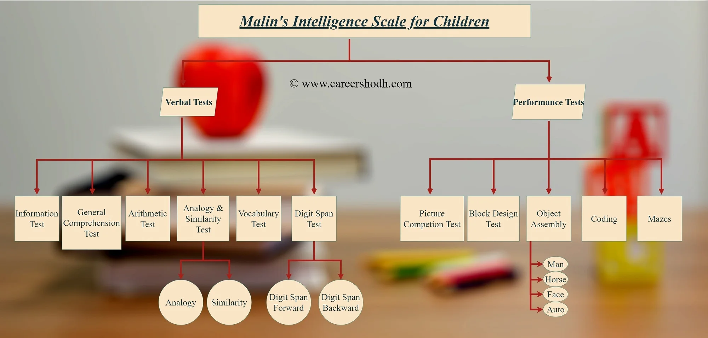

Malin’s Intelligence Scale for Indian children (MISIC) is the most accepted IQ test for Indian children based on the Wechsler Adult Intelligence Scale (WAIS).
Intelligence is an inferred process that humans use to explain the different degrees of adaptive success in people’s behavior.
It has been defined by various psychologists. They are as follows:
According to Wechsler, “Intelligence is the aggregate or global capacity of the individual to act purposefully, to think rationally and to deal effectively with the environment.” He developed the Wechsler Bellevue Intelligence Scale in 1939. He was interested in measuring the intelligence of adults, so he designed another scale known as the Wechsler Adult Intelligence Scale (WAIS).
The first revised edition was published in 1981 - WAIS-R. Another edition was published in 1997 - WAIS III. The WISC was originally developed as a downward extension of the Wechsler Adult Intelligence Scale in 1949.
WISC was broadly categorized into two parts. They are as follows:
This test works on the concept of a point scale. All items of a particular type are grouped together and are presented in the increasing order of difficulty. A raw score of each test is totaled and then converted into a derived score, called “Scaled Scores” in WISC. This scaled score is converted into IQ’s for verbal, performance and full-scale IQ.
A revised edition was published in 1974, known as WISC-R. It featured the same subtests, however, the age range was changed from 5-15 to 6-16. Another revised edition was published in 1991 known as WISC III. Currently, we are using WISC IV which was published in 2003.
Malin’s has been adapted from the American test WISC developed by Dr. David Wechsler.
The Indian Scale has been constructed by Dr. Arthur J. Malin of Nagpur. During adaptation, an almost total revision had to be made of the test, especially of the culturally biased verbal items. So the test was named as Intelligence Scale for Indian Children- ISIC or MISIC. English is the only language that applies universally through India; hence WISC has adapted in English for English Speaking children in India. Later it was also adapted in Hindi and Marathi as India is a country dominated by many regional languages.
MISC is an intelligence test for children from the ages of 6 to 15 years 11 months. It is administered individually and takes about 2 to 2-1/2 hours.
The test comprises 11 subtests divided into two groups: Verbal Tests & Performance Tests.